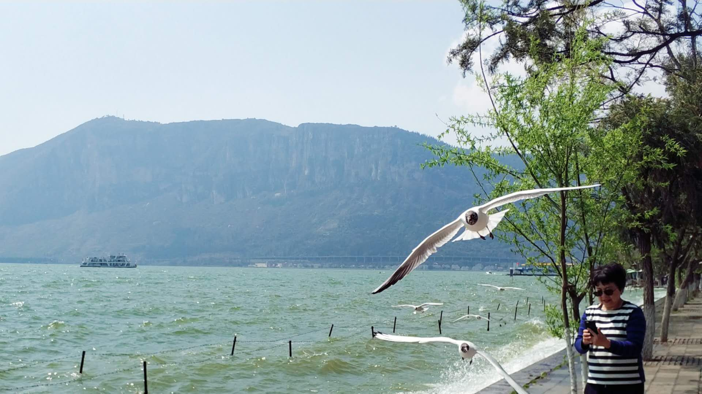

原本计划去大理或者丽江的，但是在版纳多悠闲了几天，便选择了在昆明逗留两天。在印象里，昆明是一座四季如春的城市，这次路过昆明，实际算下来只玩了一天半，也没有什么计划，连酒店都是下了飞机才在APP上找的，但是想想，旅行不就应该随意嘛。计划之外的昆明行，给我的惊喜便是邂逅海鸥。

在我的印象里，海鸥不是只在海边才有吗？在网上查了一下，在昆明的海鸥是来自西伯利亚的红嘴海鸥，每年的十一月份从西伯利亚飞过来过冬，三月份左右飞回去。在昆明的翠明湖里有少许的海鸥，看海鸥的话，还得去海埂大坝，就是滇池，那里才是海鸥过冬的栖息地。海埂大坝是不要门票的，在滇池旁边就有很多海鸥，可以喂它们面包和鸥粮，但是我发现它们更喜欢面包。喂海鸥才是到电池游玩最大的乐趣，在湖边就可以喂。如果想更加近距离接触海鸥，可以乘坐邮轮到滇池里面去，这时候海鸥追着邮轮抢食面包，真的很有趣，而且海鸥真的好可爱呀！
昆明之行，除了海鸥，还约见了一个远方的亲戚和看了一场电影。从他的描述中，昆明不会一个快节奏的城市，或许是一值处于北京的快节奏之中，对慢节奏的城市特别敏感吧，也许内心想慢下来，悠闲悠闲。在云南晃晃悠悠过了一个礼拜，回北京又该投入到紧张的工作中去了。也许，有一天，等财务自由了，就能天天慢悠悠的过日子了～